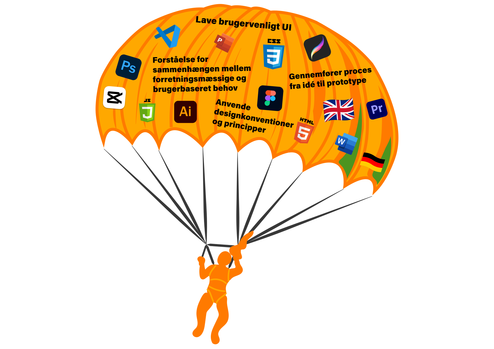

OM
Som person er jeg venlig og rar at være sammen med. Udadtil virker jeg introvert med få ord, men det skal ikke overskygge, at jeg også er åben, smilende, positiv, respekterende og anerkendende. Når jeg først har set rummet og situationen an, er jeg også humoristisk, modig og engageret.
En faldskærm af kompetencer
- når jeg springer ud i nye udfordringer
Mine drømme
Jeg drømmer om at rejse, opleve storslået natur og anderledes kulturer. Jeg har erfaret, at jeg får endnu mere glæde i livet af at rejse og møde nye mennesker. Med rejsemålene har jeg selvfølgelig også en lille bucketliste:
- Springe i faldskærm
- Se den indiske jungle
- Flyve luftballon i Cappadocia
- Se Hobbiton i New Zealand
- Safari i Tanzania
Jeg er klar over, at et job som nyuddannet multimediedesigner ikke direkte er lig med økonomi
og tid til lange store rejser. Dog er det ikke umuligt med den fleksibilitet internettet har givet os.
På længere sigt drømmer jeg om et job, hvor jeg i højere grad også kan arbejde remotely.
Men… hver ting til sin tid.
Lige nu vil jeg gerne skabe en god base, hvor jeg danner erfaringer og kontakter i Danmark.
Udover kontakter i erhvervslivet ønsker jeg også at få gode kollegaer, der en gang i mellem også er sociale i fritiden.
Lige nu har jeg forskellige vennegrupper, hvor vi bor langt fra hinanden, så jeg værdsætter flere kontakter tættere på.
Generelt drømmer jeg om at skabe en tilværelse for mig selv,
hvor jeg er glad for mit arbejde, og kan se at mine drømme ikke er uopnåelige.
Hvad gør mig glad?
Jeg holder meget af at grine med venner og familie.
Da jeg var yngre gik jeg meget til ridning, så det er nostalgisk, når jeg tager på tur med mine forældre for at ride om kap i bakkelandskabet.
Jeg elsker at gå til dans og har også gået til gymnastik i mange år, men jeg er ikke helt skarp, så jeg gør det mest for sjov.
Generelt oplever jeg ro i tankerne, når jeg bruger min krop fysisk for at lære, derfor holder jeg også af at prøve nye aktiviteter - helst i sol og varme.
For to år siden lærte jeg fx at surfe i Brasilien, og siden har jeg prøvet at forbedre mig i Klitmøller, Portugal og på Tenerife - det er bare bedst under varmere himmelstrøg.
Ellers træner og løber jeg nogle gange i ugen for at holde grundformen og humøret oppe.
Når jeg ikke er fysiske aktiv, kan jeg godt lide at fordybe mig i at tegne og male. I kan se nogle af mine værker her
FRITIDS PROJEKTER